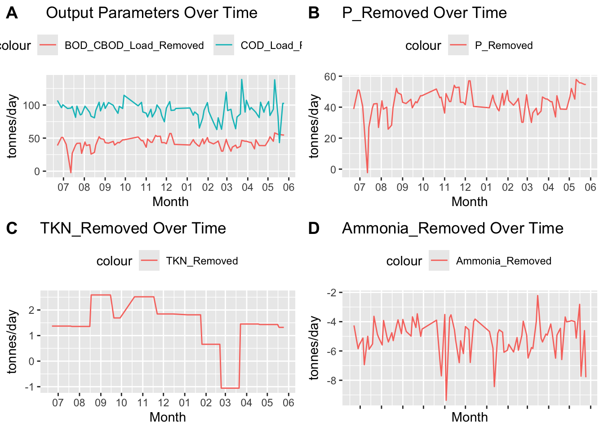
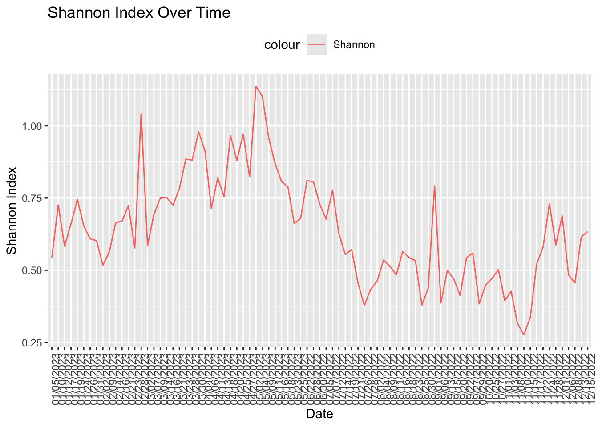

The following object is masked from 'package:nlme':
collapse
The following object is masked from 'package:ape':
where
The following objects are masked from 'package:stats':
filter, lag
The following objects are masked from 'package:base':
intersect, setdiff, setequal, union
microbiome R package (microbiome.github.com)
Copyright (C) 2011-2022 Leo Lahti,
Sudarshan Shetty et al. <microbiome.github.io>
Attaching package: 'microbiome'
The following object is masked from 'package:ggplot2':
alpha
The following object is masked from 'package:vegan':
diversity
The following object is masked from 'package:base':
transform
── Attaching core tidyverse packages ──────────────────────── tidyverse 2.0.0 ──
✔ forcats 1.0.0 ✔ readr 2.1.5
✔ lubridate 1.9.3 ✔ stringr 1.5.1
✔ purrr 1.0.2
── Conflicts ────────────────────────────────────────── tidyverse_conflicts() ──
✖ microbiome::alpha() masks ggplot2::alpha()
✖ dplyr::collapse() masks nlme::collapse()
✖ dplyr::filter() masks stats::filter()
✖ dplyr::lag() masks stats::lag()
✖ dplyr::where() masks ape::where()
ℹ Use the conflicted package (<http://conflicted.r-lib.org/>) to force all conflicts to become errors
Attaching package: 'reshape2'
The following object is masked from 'package:tidyr':
smiths
Attaching package: 'ggpubr'
The following object is masked from 'package:ape':
rotate
Loading Metadata
otu_mat<-read_excel("/Users/julietmalkowski/Desktop/Research/Kinetic_Model/abundance_table.xlsx")#remove first 4 characters in every column namecolnames(otu_mat)<-substr(colnames(otu_mat), 5, nchar(colnames(otu_mat)))otu_mat =as.data.frame(otu_mat)#split first column by character '_' into two seperate columnsotu_mat[c('Process', 'Date')] <-str_split_fixed(otu_mat$le, '_', 2)#drop le columnotu_mat = otu_mat[,-1]#move last two columns to the frontotu_mat <- otu_mat %>%select(Process, everything())otu_mat <- otu_mat %>%select(Date, everything())#filter otu_mat to only contain AS-1 and AS-2 in process columnotu_mat <- otu_mat %>%filter(Process =="AS-1"| Process =="AS-2")#remove Process columnotu_mat = otu_mat[,-2]#groupby date and find the mean of each columnotu_counts <- otu_mat %>%group_by(Date) %>%summarise_all(mean)otu_p = otu_counts#find the sum of each rowotu_p$sum <-rowSums(otu_p[,-1])#divide each row by the sumotu_p[,-1] <- otu_p[,-1] / otu_p$sum#remove sum columnotu_p = otu_p[,-ncol(otu_p)]#make otu_p from wide form to long formotu_p <- otu_p %>%pivot_longer(cols =-Date, names_to ="OTU", values_to ="Abundance")#filter out rows with an Abundance less than 0.01otu_p <- otu_p %>%filter(Abundance >=0.01)#calculate Shannon Index and add it to otu_p columnshannon =function(x) {-sum(x *log(x))}otu_shannon = otu_ps = otu_shannon %>%group_by(Date) %>%summarize(Shannon =shannon(Abundance))otu_shannon =merge(otu_shannon, s, by ="Date")output_metadata <-read_excel("/Users/julietmalkowski/Desktop/Research/Kinetic_Model/AS_metadata.xlsx")
New names:
• `` -> `...1`
output_metadata =as.data.frame(output_metadata)#input parametersinput_metadata = output_metadatainput_metadata = input_metadata[,c(2,3,5,7,10,12,14,16,18,20)]input_data = input_metadatainput_data =merge(otu_shannon, input_metadata, by ="Date")#output parametersoutput_metadata = output_metadata[,-c(1,3:8,10,12,14:20)]output_data =merge(otu_shannon, output_metadata, by ="Date")#change column 6 namecolnames(output_data)[6] <-"BOD_CBOD_Load_Removed"#remove column in output_datainput_data_ = input_data[,-c(2:4)]input_data_ =as.data.frame(input_data_)#remove duplicatesinput_data_ = input_data_[!duplicated(input_data_[,1]),]#make first column rownames in output_data_rownames(input_data_) <- input_data_[,1]#remove first columninput_data_ = input_data_[,-1]#move rowcols to first columninput_data_ =cbind(Date =rownames(input_data_), input_data_)input_data_$Date <-mdy(input_data_$Date)#remove rownamesrownames(input_data_) <-NULL#remove column in output_dataoutput_data_ = output_data[,-c(2:5)]output_data_ =as.data.frame(output_data_)#remove duplicatesoutput_data_ = output_data_[!duplicated(output_data_[,1]),]#make first column rownames in output_data_rownames(output_data_) <- output_data_[,1]#remove first columnoutput_data_ = output_data_[,-1]#move rowcols to first columnoutput_data_ =cbind(Date =rownames(output_data_), output_data_)#remove rownamesrownames(output_data_) <-NULL#make date column numericoutput_data_$Date <-mdy(output_data_$Date)
a =ggplot() +geom_line(data=output_data_,aes(x = Date,y = BOD_CBOD_Load_Removed, color ="BOD_CBOD_Load_Removed"),group =1) +geom_line(data=output_data_,aes(x = Date, y = COD_Load_Removed,color ="COD_Load_Removed"),group =1) +ggtitle("Output Parameters Over Time") +xlab("Month") +ylab("tonnes/day") +scale_x_date(date_breaks ="1 month", date_labels ="%m") +theme(legend.position="top")b =ggplot() +geom_line(data=output_data_,aes(x = Date,y = BOD_CBOD_Load_Removed, color ="P_Removed"),group =1) +ggtitle("P_Removed Over Time") +xlab("Month") +ylab("tonnes/day") +scale_x_date(date_breaks ="1 month", date_labels ="%m") +theme(legend.position="top")c =ggplot() +geom_line(data=output_data_,aes(x = Date,y = TKN_Removed, color ="TKN_Removed"),group =1) +ggtitle("TKN_Removed Over Time") +xlab("Month") +ylab("tonnes/day") +scale_x_date(date_breaks ="1 month", date_labels ="%m") +theme(legend.position="top")d =ggplot() +geom_line(data=output_data_,aes(x = Date,y = Ammonia_Removed, color ="Ammonia_Removed"),group =1) +ggtitle("Ammonia_Removed Over Time") +xlab("Month") +ylab("tonnes/day") +scale_x_date(date_breaks ="1 month", date_labels ="%m") +theme(legend.position="top")ggarrange(a, b, c, d +rremove("x.text"), labels =c("A", "B", "C", "D"),ncol =2, nrow =2)

Shannon Index Visualization
ggplot() +geom_line(data=s,aes(x = Date,y = Shannon, color ="Shannon"),group =1) +ggtitle("Shannon Index Over Time") +xlab("Date") +ylab("Shannon Index") +theme(legend.position="top") +theme(axis.text.x =element_text(angle =90, hjust =1))

OTU 1,4,2,6 Visualization
#put character z in front of all columnscolnames(otu_counts) <-paste0("z", colnames(otu_counts))#select only columns named '1' in otu_countsotus <-select(otu_counts,z1,z4,z2,z6,zDate)#plot the dataggplot() +geom_line(data=otus,aes(x = zDate, y = z1, color ="1"),group =1) +geom_line(data=otus,aes(x = zDate, y = z4,color ="4"),group =1) +geom_line(data=otus,aes(x = zDate, y = z2,color ="2"),group =1) +geom_line(data=otus,aes(x = zDate, y = z6 ,color ="6"),group =1) +ggtitle("OTU 1,4,2,6 Over Time") +xlab("Date") +ylab("Abundance") +theme(legend.position="top") +theme(axis.text.x =element_text(angle =90, hjust =1))